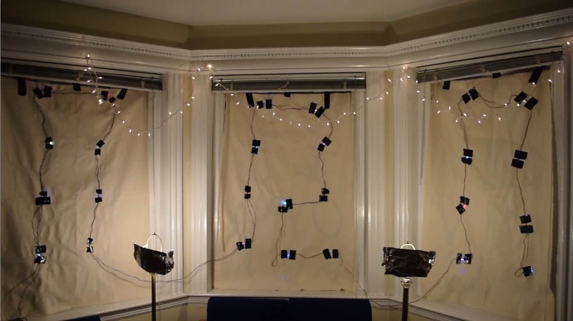

The idea of this project was based off the popular Netflix show Stranger Things, (don't worry, no spoilers here). The show's concept is that the "other side" can interact with the real world in through certain means, like electromagnetism. One such interaction occurs where Christmas lights are strung up on a wall, each one corresponding to a letter, allowing messages to be 'blinked' out, very similar to a Ouija board.
Like many other makers as it has become apparent, I had the idea to make a replica that could be remotely controlled. However, I particularly chose to set the board up in a window facing the central plaza of BU's campus, and connect the board up to a server via a popular IoT board, the ESP8266.
Some preliminary tests were done with mapping out letters in the window, and running across the street to see if it was visible. Sketching out letters for the given 3-paned window space, I mapped out the letters to maximize their size. However, during the night the letters were barely visible, even with a lit room.
The solution was of course to increase light. With some makeshift aluminum foil reflectors, two lamps became two flood lights. To more evenly light the top area, string lights were hung (and surprisingly made a significant difference).
For the lights, I choose some single, RGB Neopixel LEDs. These allow me to animate each light individually, while only using 1 PWM data line, allowing for any type of animation. I did consider using tear-drop shape, authentic Christmas lights, but I soon realized creating a custom shift register for 26 different lights would take a good deal of soldering.
On the coding side of things, the ESP8266 can be conveniently programmed with the Arduino IDE. On
//IMAGE OF SERVER CLIENT DIAGRAM